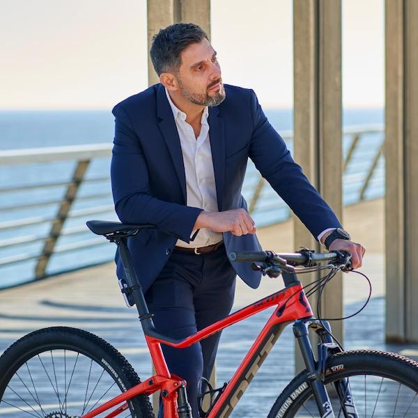
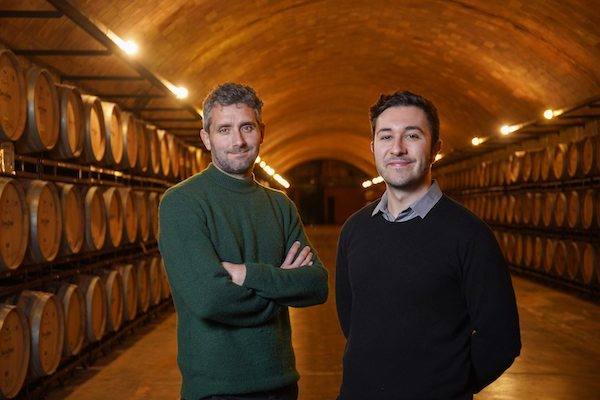
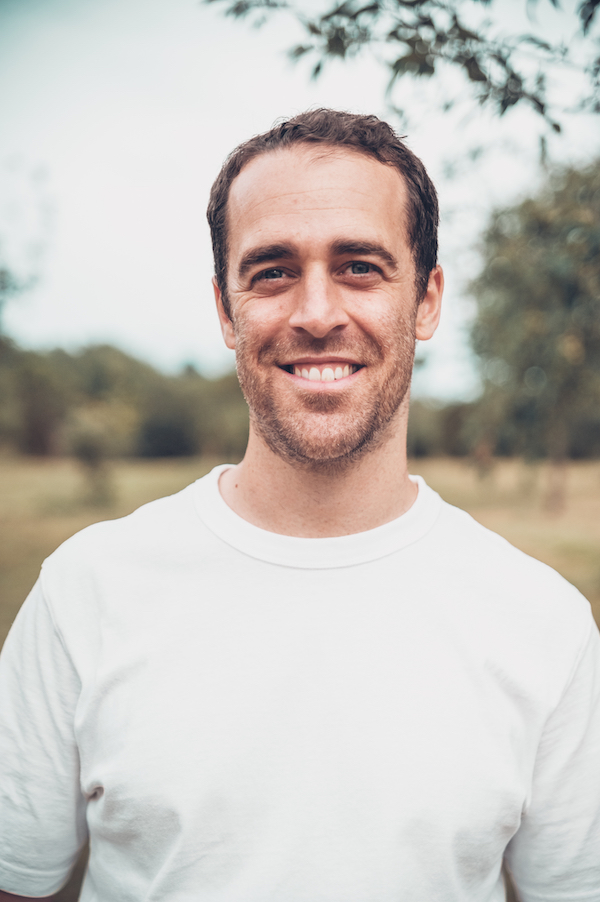
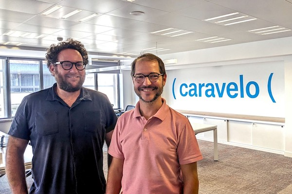

10 emprendedores
Jeff Bezos nació el 12 de enero de 1964 en Albuquerque, Nuevo México, Estados Unidos. Es hijo de Jacklyn Gise Jorgensen y su padre biológico Ted Jorgensen. Los padres de Bezos se separaron menos de un año antes de que él naciera y, cuando Bezos tenía cuatro años, su mamá se casó con su padrastro, Mike Bezos, un inmigrante cubano. Bezos es un empresario tecnológico, fundó Amazon.com, el comercio online más grande del mundo. Además, es creador del fabricante aeroespacial y proveedor de servicios Blue Origin, una empresa que desarrolla tecnologías para brindar viajes espaciales. trabajó en Wall Street y creó Amazon en 1994 para vender libros en línea. Después de una oferta pública inicial en 1997, las acciones de Amazon aumentaron casi 40 veces, elevando la fortuna personal de Bezos por encima de los US$12 mil millones.
Salsa es una startup surgida por la oportunidad de lanzar al mercado un producto tecnológico muy especializado y superior al resto del mercado. Un producto que nace de la propia experiencia de uno de sus fundadores, Juan BarrosoUn dream team que hoy conforman 17 personas, el 90% en el área de ingeniería y producto, con el que han colocado su producto principalmente en EEUU y Canadá. El resultado es una plataforma que “ofrece APIs para la gestión de nóminas que permite a cualquier desarrollador de software lanzar un producto en semanas en vez de años. Nuestras APIs hacen posible integrar la gestión de nóminas en plataformas que ofrecen gestión de empleados y que quieren ampliar su producto sin tener que entender e implementar la compleja legislación.

fabbric es una plataforma que ayuda a lanzar negocios de moda, ya que ofrece en un solo lugar todo lo necesario para ponerlo en marcha: desde el diseño de los artículos, pasando por su producción, logística y venta online. “La industria de la moda es compleja y solo las grandes marcas y grupos tienen la capacidad de mantenerse competitivas, ya que los equipos de diseño y operaciones son caros y las cadenas de suministros son complejas. fabbric rompe con esta dinámica, permitiendo que cualquier persona se convierta en un pionero de la moda, creando y vendiendo sus propias prendas, todo en un mismo lugar”
la propuesta de valor de All in biking, fundada por José Julio Becerril. “Está desarrollada por y para ciclistas, y cubre las necesidades de los mismos, de la industria y de todo aquello que mueve el mundo de la bici. Además, es totalmente gratuita para el usuario” explica él mismo. Un negocio que nació en 2020 para dar respuesta a otros aficionados que como el propio José Julio Becerril hubiesen sufrido el robo de sus bicicletas. En su caso era la segunda vez que pasaba por esa situación, y al denunciarlas se da cuenta de que “es prácticamente imposible que pueda volver a recuperarlas debido a que tecnológicamente es muy complicado trazar de forma sencilla la propiedad de la bicicleta con su legítimo propietario”
RawData es una startup de tecnología avanzada que surgió durante un máster de big data. Sus dos fundadores, David Olmo yAlbert Duaigües, desarrollaron algoritmos de predicción de cosecha y maduración como proyecto de fin de carrera. Y tras comprobar que había demanda por parte de clientes reales se lanzaron a la arena y desarrollaron una solución de software más completa; hoy incluye módulos de RRHH que usan reconocimiento facial para evitar la suplantación de identidad en campo y también en almacén.
Taclia en un software de gestión todo en uno que se adapta a cualquier tipo de negocio, ya que es personalizable. Con esta plataforma, se pueden utilizar funcionalidades como el control interno (control horario, tareas internas, inventario…),gestión de ventas (creación y gestión de citas, clientes, cobros y pagos, presupuestos y facturas…) y gastos (control de gastos de manera fácil y lista de proveedores).La idea no nació de primeras siendo software. Nacimos como una empresa multiservicio llamada Pintaclia. Tras escuchar a nuestros clientes, vivir las dificultades de una pyme (las nuestras y entender las de ellos), descubrimos que necesitábamos una herramienta interna que nos facilitara el día a día. Ahí fue cómo se inició Taclia, con el objetivo de reducir el trabajo manual y cubrir todas las áreas para trabajar mejor, ahorrar tiempo y aumentar las ventas”, añade.

“Caravelo es una empresa de tecnología de viajes que ofrece soluciones de suscripción al sector turístico y de movilidad. Ayudamos a nuestros clientes a aumentar sus ingresos y su cuota de mercado, a la vez que reducimos el impacto de la estacionalidad y mejoramos su resistencia ante las crisis y la experiencia del cliente a través del lanzamiento de programas de suscripción o membresía Una idea única en el mercado, que ha pasado por varios procesos de iteración para llegar adonde está. “Hasta hace unos años, Caravelo tenía una cartera de varias soluciones de software para aerolíneas y fue una de ellas quien nos animó a meternos en este nicho. En la pandemia se vio claramente que el futuro y la mayor oportunidad de negocio estaba en el mundo de las suscripciones y la empresa se centró exclusivamente en eso
